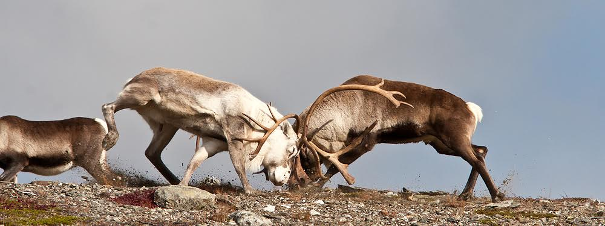

JENS LARSSEN FOTO

Bildekåseri
Jens Larssen tilbyr gjennom bildekåseri unike innblikk fra sine opplevelser i skog og mark.
Kåseriene kan settes sammen i innhold og lengde etter dine ønsker og vil bli
presentert ved Jens Larssen og Bård Bakås.
Ønsker du et bildekåseri eller videre hendvendelser er det bare å ta kontakt.
Gå til kontaktinformasjon"(Link til kontaktinformasjon, nå bare en link til Google)